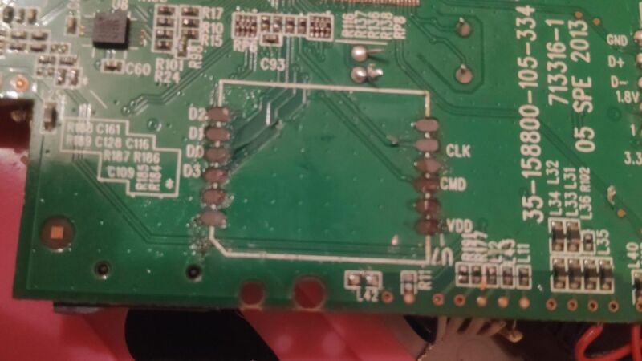

VTech Storio 3S
The VTech Storio 3S (or Innotab 3S outside of Europe) is a tablet aimed at children from 3 to 9 years old. It includes things like coloring games, an e-book reader and other “age appropriate content”. Additional games are sold separately, either as downloadable apps or as physical cartridges.
I bought a used one for around 20€ in order to learn how to reverse engineer an actual device. I managed to find a serial port to connect to, and a "secret code" that grants root privileges.
The following write-up describes the reverse engineering process.
Gathering information
In this Hackaday Superconference 2016 talk, Samy Kamkar mentions a trick for gathering information about a piece of electronics without opening it: by law, any consumer device transmitting a radio signal and sold in the US have to be registered in the Federal Communications Commission public database. These entries are often a good source for internal and external pictures.
Since the Storio 3S uses Wi-Fi, it has an FCC ID printed on the back of its case. A quick search on FCC ID.io returned several documents, including pictures of the circuit board with close-ups of the main integrated circuits.

After looking online for the datasheet of each chip, I was able to identify most of them:
- Ralink RT5370N: Wi-Fi module
- PME810816BBR-E7DN: 1 Gb SDRAM
- Samsung KLM4G1YE4C-B001: 4GB eMMC flash memory
- GPL32902 A-003C-QL 172: A CPU manufactured by General Plus (I didn’t find its datasheet)
What I’ve learned so far made me pretty confident that there was an operating system running on this device. So the next step was pretty clear: I needed to find a way to interact with the OS in order to send it some commands.
Finding a locked door
Manufacturers usually don’t want users to poke around their products’ internals. This meant that I was unlikely to get direct access to the OS using the normal user interface. Therefore, I had to find another way to interact with the tablet.

Electronic devices like this one usually have to be tested during their development process, so there must be a way for engineers to talk to the tablet with a computer. This meant I had to find some kind of connector (or traces thereof), or a set of exposed copper pads on the circuit board that would look like it was made for this purpose.

And lo and behold, there is a group of test pads near the edge of the motherboard! Here the “RX” and “TX” labels indicate “Receive”, “Transmit” connections, while “GND” and “DVDD” are used for negative and positive connections to the power supply. My theory was that these are used to transmit and receive data for test purposes using the Universal asynchronous receiver-transmitter protocol (or UART for short). After checking that there was indeed some voltage on these pads using a multimeter, I soldered three jumper wires with female pin connectors to the pads.

I couldn’t just connect these wires to my computer, so I used a Bus Pirate as an interface. This “open source hacker multi-tool” connects to a USB port, allowing me to interact with the board from a terminal. After wiring the Bus Pirate to the motherboard and setting it into “transparent bridge mode”, this is what I could read while the tablet was booting:
Nice! The tablet was sending me some debug information and, based on the file paths, it seemed to be running a Linux based OS. But my joy was short-lived as I quickly noticed something strange: while I was able to read data coming from the tablet, it wasn’t echoing what I was sending from my computer. Moreover, my newly find serial port did not greet me with a nice prompt inviting me to enter a command.
So in order to understand what was blocking my inputs, I perform a very precise test of “mashing random keys while the tablet was booting”, which revealed a few things:
- At the beginning of the boot process, the tablet was correctly receiving my inputs and echoing them back to me
- The echoing stopped once a particular program named “._.” started
So this strangely named executable was somehow intercepting what I was sending instead of passing it through to the OS. Therefore, my next step was to find out what this mysterious program did. But how can I access this file without using my newly found serial port ?
Taking the lock apart
This “._.” file was stored inside the tablet. And the only likely place for it to be being the eMMC chip, I had to extract it. Luckily for me, it is mounted on a separate PCB, which meant I should be able to extract it without too much hassle…

…or not. As it turned out, I wasn’t very patient and ended up ripping the PCB out, along with the copper pads it was soldered to. Which meant that I couldn’t put this chip back. But hey, at least now it was out!
Connecting it to my computer required some work. These eMMC flash storage device actually uses the same communication protocol as an SD card. So I soldered some jumper wires to a microSD to SD card adapter:

Since the pads on the PCB were nicely labeled, I was able to match each one with the corresponding wire using an SD card pinout I found online. And once plugged into my computer, I could access the partitions:
Some of these didn’t have a file system installed, so I used binwalk to extract those. The file I was looking for was on the root file system, stored on the third partition (mmcblk0p3).
So, what does this executable do ? To find that out, I loaded it into Ghidra.

In a nutshell, this tool takes a binary executable and translates it into more readable C code. But since things like variable or function names are discarded during the compilation process, it’s up to the user to interpret whatever code comes up with.
Eventually, I was able to piece things together and found out what this software does:
- First, it disables echo on the terminal (which is why I wasn’t able to see what I was typing once it was loaded)
- It then reads the standard input and checks for the string “1021\n”
- When this is detected, it adds a line to the inittab file telling the OS to start a terminal on the serial port
- Finally, it reloads the init process to take the modification into account before deleting itself
So apparently, all I have to do is type “1021” and press enter to get a shell ?
Getting in
I ordered a new tablet and I modified it the same way as before to add a serial port. After ._. was loaded I typed “1021”, pressed Enter and…

Well, this was a bumpy ride!
Now, to be honest, I could have followed a step-by-step guide I found online when looking for information on the tablet. In fact, all of this has already been done before, and there are entire forums dedicated to hacking these tablets, along with patched firmware to run bootleg apps.
But I wanted to try it out myself, and going through the whole process was a fruitful learning experience: it gave context to all the things I read about, it gave me an opportunity to try some new tools and, most importantly, it was a lot of fun!
Furthermore, getting a root shell opens the door to a lot of new opportunities: I could try to cross-compile my own programs to run on the tablet, try to get my head around the software protection system, or just explore the filesystem to find some interesting stuff (more on that in a future post).
I hope this article inspires others who, like me, are interested in hardware hacking/reverse engineering but are too intimidated to give it a try. And if your soldering skills are better than mine, perhaps you can get away with buying only one tablet.
Resources
- Samy Kamkar’s talk at the Hackaday Superconference 2016, an inspiring talk from which I stole a few tricks used in this project
- FCC ID.io provides a more straightforward way to search for devices using their FCC ID than the official FCC website
- Hardware Hacking 101 series at River Loop Security, a series of step-by-step guides on how to approach different kind of targets
- Bus Pirate, the tool I used to interface with the serial port on the tablet. It wasn’t strictly mandatory for this project (I could have used a Raspberry Pi for UART communication), but I had one around from a previous project
- stacksmashing’s Youtube channel which introduced me to Ghidra